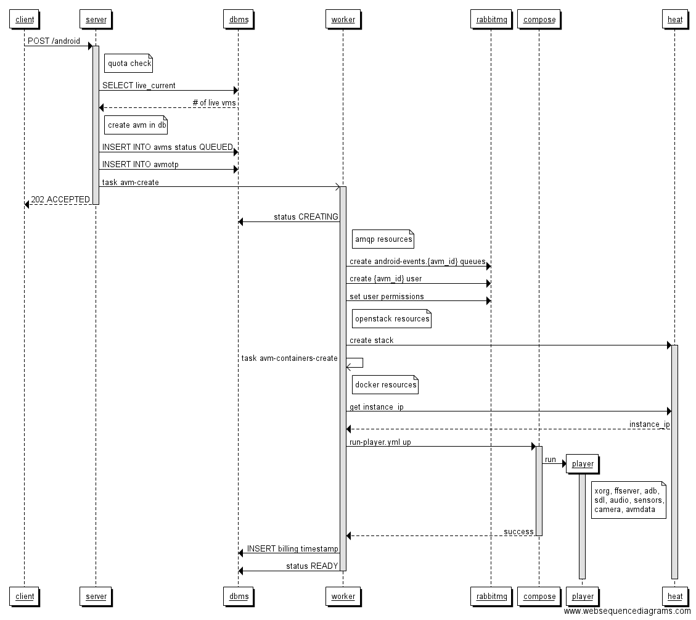

Kyaraben
0.8
Getting Started
Kyaraben server & worker
Kyaraben client
Sequence Diagrams
Project creation + generic error case
Project delete
Android VM creation
Android delete
Android monkey
HTTP API Reference
HTTP Routing Table
Kyaraben
Docs
»
Sequence Diagrams
View page source
Sequence Diagrams
¶
Some simplified communication flow examples. Error conditions are not taken into account.
Project creation + generic error case
¶
Project delete
¶
Android VM creation
¶

Android delete
¶
Android monkey
¶